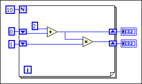

Use shift registers when you want to pass values from previous iterations through a loop to the next iteration. A shift register appears as a pair of terminals, shown as follows, directly opposite each other on the vertical sides of the loop border.
The terminal on the right side of the loop contains an up arrow and stores data on the completion of an iteration. LabVIEW transfers the data stored in the right terminal of the shift register to the left terminal. The loop then uses the data from the left terminal as the initial values for the next iteration. This process continues until all iterations of the loop execute. After the loop executes, the terminal on the right side of the loop returns the last value stored in the shift register.
A shift register transfers any data type and automatically changes to the data type of the first object wired to the shift register. The data you wire to the terminals of each shift register must be the same type. When an error cluster is wired to a shift register on a parallel For Loop, the shift register converts to an error register.
You can add more than one shift register to a loop. If you have multiple operations that use previous iteration values within a loop, use multiple shift registers to store the data values from those different processes in the structure, as shown in the following block diagram.

In the previous block diagram, the upper right shift register terminal transfers 2, the sum of 0 and 2 in the first iteration, to the upper left terminal as the initial value for the second iteration of the addition operation. The lower right terminal transfers 2, the product of 1 and 2 in the first iteration, to the lower left terminal as the initial value for the second iteration of the multiplication operation.
The second iteration adds 2 and 2 and transfers the outcome, 4, to the upper left terminal for the third iteration. The second iteration also multiplies 2 and 4 and transfers the outcome, 8, to the lower left terminal for the third iteration.
After ten iterations, the upper right terminal transfers the final outcome of the addition operation to the upper indicator and the lower right terminal transfers the final outcome of the multiplication operation to the lower indicator.